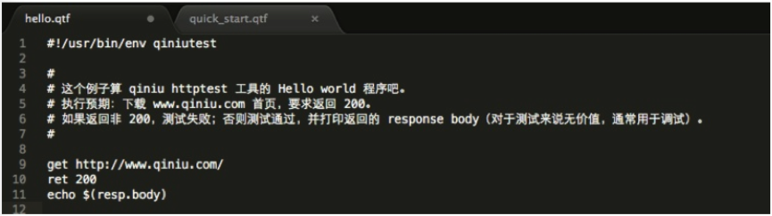
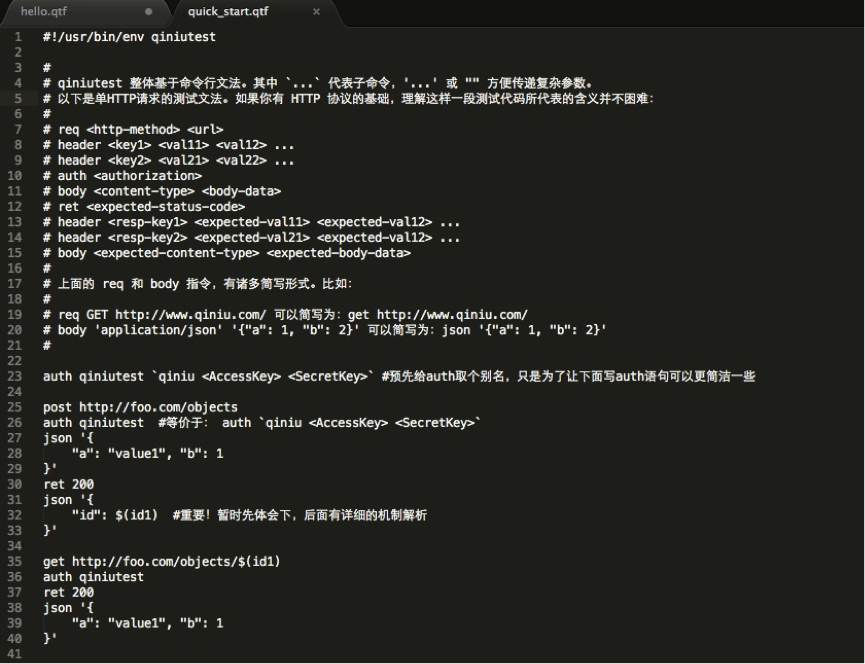
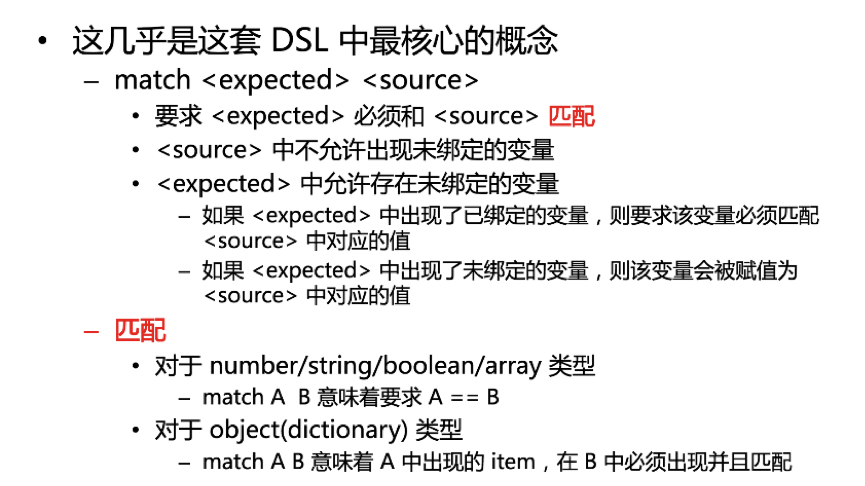
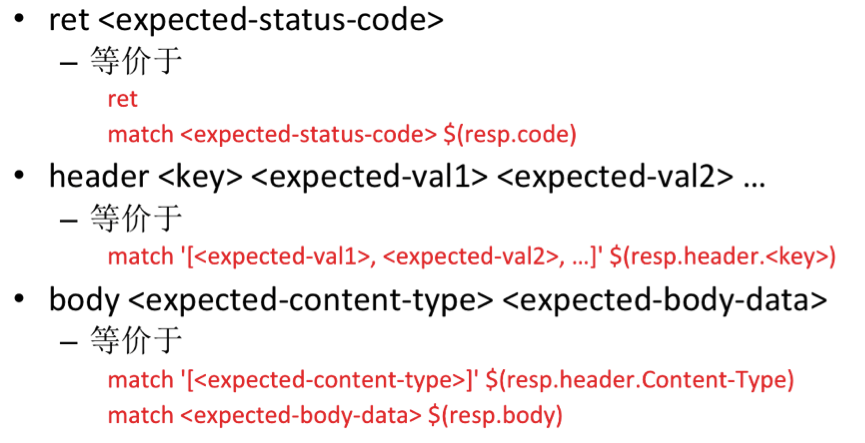
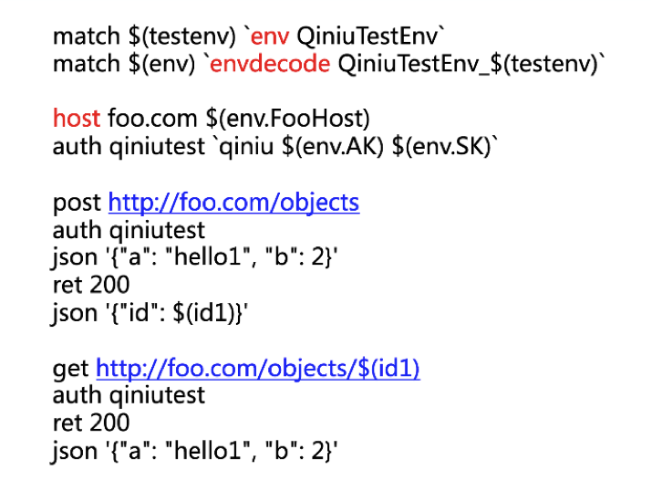

- 00 开篇词 怎样成长为优秀的软件架构师？.md
- 01 架构设计的宏观视角.md
- 02 大厦基石：无生有，有生万物.md
- 03 汇编：编程语言的诞生.md
- 04 编程语言的进化.md
- 05 思考题解读：如何实现可自我迭代的计算机？.md
- 06 操作系统进场.md
- 07 软件运行机制及内存管理.md
- 08 操作系统内核与编程接口.md
- 09 外存管理与文件系统.md
- 10 输入和输出设备：交互的演进.md
- 11 多任务：进程、线程与协程.md
- 12 进程内协同：同步、互斥与通讯.md
- 13 进程间的同步互斥、资源共享与通讯.md
- 14 IP 网络：连接世界的桥梁.md
- 15 可编程的互联网世界.md
- 16 安全管理：数字世界的守护.md
- 17 架构：需求分析 (上).md
- 18 架构：需求分析 (下) · 实战案例.md
- 19 基础平台篇：回顾与总结.md
- 20 桌面开发的宏观视角.md
- 21 图形界面程序的框架.md
- 22 桌面程序的架构建议.md
- 23 Web开发：浏览器、小程序与PWA.md
- 24 跨平台与 Web 开发的建议.md
- 25 桌面开发的未来.md
- 26 实战（一）：怎么设计一个“画图”程序？.md
- 27 实战（二）：怎么设计一个“画图”程序？.md
- 28 实战（三）：怎么设计一个“画图”程序？.md
- 29 实战（四）：怎么设计一个“画图”程序？.md
- 30 实战（五）：怎么设计一个“画图”程序？.md
- 31 辅助界面元素的架构设计.md
- 32 架构：系统的概要设计.md
- 33 桌面开发篇：回顾与总结.md
- 34 服务端开发的宏观视角.md
- 35 流量调度与负载均衡.md
- 36 业务状态与存储中间件.md
- 37 键值存储与数据库.md
- 38 文件系统与对象存储.md
- 39 存储与缓存.md
- 40 服务端的业务架构建议.md
- 41 实战（一）：“画图”程序后端实战.md
- 42 实战（二）：“画图”程序后端实战.md
- 43 实战（三）：“画图”程序后端实战.md
- 44 实战（四）：“画图”程序后端实战.md
- 45 架构：怎么做详细设计？.md
- 46 服务端开发篇：回顾与总结.md
- 47 服务治理的宏观视角.md
- 48 事务与工程：什么是工程师思维？.md
- 49 发布、升级与版本管理.md
- 50 日志、监控与报警.md
- 51 故障域与故障预案.md
- 52 故障排查与根因分析.md
- 53 过载保护与容量规划.md
- 54 业务的可支持性与持续运营.md
- 55 云计算、容器革命与服务端的未来.md
- 56 服务治理篇：回顾与总结.md
- 57 心性：架构师的修炼之道.md
- 58 如何判断架构设计的优劣？.md
- 59 少谈点框架，多谈点业务.md
- 60 架构分解：边界，不断重新审视边界.md
- 61 全局性功能的架构设计.md
- 62 重新认识开闭原则 (OCP).md
- 63 接口设计的准则.md
- 64 不断完善的架构范式.md
- 65 架构范式：文本处理.md
- 66 架构老化与重构.md
- 67 架构思维篇：回顾与总结.md
- 68 软件工程的宏观视角.md
- 69 团队的共识管理.md
- 70 怎么写设计文档？.md
- 71 如何阅读别人的代码？.md
- 72 发布单元与版本管理.md
- 73 软件质量管理：单元测试、持续构建与发布.md
- 74 开源、云服务与外包管理.md
- 75 软件版本迭代的规划.md
- 76 软件工程的未来.md
- 77 软件工程篇：回顾与总结.md
- 加餐 如何做HTTP服务的测试？.md
- 加餐 实战：“画图程序” 的整体架构.md
- 加餐 怎么保障发布的效率与质量？.md
- 热点观察 我看Facebook发币（上）：区块链、比特币与Libra币.md
- 热点观察 我看Facebook发币（下）：深入浅出理解 Libra 币.md
- 用户故事 站在更高的视角看架构.md
- 答疑解惑 想当架构师，我需要成为“全才”吗？.md
- 结束语 放下技术人的身段，用极限思维提升架构能力.md
- 课外阅读 从《孙子兵法》看底层的自然法则.md
加餐 如何做HTTP服务的测试？
你好，我是七牛云许式伟。
基于 HTTP 协议提供服务的好处是显然的。除了 HTTP 服务有很多现成的客户端、服务端框架可以直接使用外，在 HTTP 服务的调试、测试、监控、负载均衡等领域都有现成的相关工具支撑。
在七牛，我们绝大部分的服务，包括内部服务，都是基于 HTTP 协议来提供服务。所以我们需要思考如何更有效地进行 HTTP 服务的测试。
七牛早期 HTTP 服务的测试方法很朴素：第一步先写好服务端，然后写一个客户端 SDK，再基于这个客户端 SDK 写测试案例。
这种方法多多少少会遇到一些问题。首先，客户端 SDK 的修改可能会导致测试案例编不过。其次，客户端 SDK 通常是使用方友好，而不是测试方友好。服务端开发过程和客户端 SDK 的耦合容易过早地陷入“客户端 SDK 如何抽象更合理” 的细节，而不能专注于测试服务逻辑本身。
我的核心诉求是对服务端开发过程和客户端开发过程进行解耦。在网络协议定好了以后，整个系统原则上就可以编写测试案例，而不用等客户端 SDK的成熟。
不写客户端 SDK 而直接做 HTTP 测试，一个直观的思路是直接基于 http.Client 类来写测试案例。这种方式的问题是代码比较冗长，而且它的业务逻辑表达不直观，很难一眼就看出这句话想干什么。虽然可以写一些辅助函数来改观，但做多了就会逐渐有写测试专用 SDK 的倾向。这种写法看起来也不是很可取，毕竟为测试写一个专门的 SDK，看起来成本有些高了。
七牛当前的做法是引入一种 httptest DSL 文法。这是七牛为 HTTP 测试而写的领域专用语言。这个 httptest 工具当前已经开源，项目主页为：
- https://github.com/qiniu/httptest（httptest 框架）
- https://github.com/qiniu/qiniutest（支持七牛帐号与授权机制的 qiniutest 工具）
httptest 基础文法
这个语言的文法大概在 2012 年就已经被加入到七牛的代码库，后来有个同事根据这个 DSL 文法写了第一版本 qiniutest 程序。在决定推广用这个 DSL 来进行测试的过程中，我们对 DSL 不断地进行了调整和加强。虽然总体思路没有变化，但最终定稿的 DSL 与最初版本有较大的差异。目前来说，我已经可以十分确定地说，这个DSL可以满足 90% 以上的测试需求。它被推荐做为七牛内部的首选测试方案。

上图是这套 DSL 的 “hello world” 程序。它的执行预期是：下载 www.qiniu.com 首页，要求返回的 HTTP 状态码为 200。如果返回非 200，测试失败；否则测试通过，输出返回包的正文内容（resp.body 变量）。输出 resp.body 的内容通常是调试需要，而不是测试需要。自动化测试是不需要向屏幕去输出什么的。

我们再看该 DSL 的一个 “quick start（快速入门）” 样例。以 # 开始的内容是程序的注释部分。这里有一个很长很长的注释，描述了一个基本的 HTTP 请求测试的构成。后面我们会对这部分内容进行详细展开，这里暂时跳过。
这段代码的第一句话是定义了一个 auth 别名叫 qiniutest，这只是为了让后面具体的 HTTP 请求中授权语句更简短。紧接着是发起一个 POST 请求，创建一个内容为 {“a”: “value1”, “b”: 1} 的对象，并将返回的对象 id 赋值给一个名为 id1 的变量。后面我们会详细解释这个赋值过程是如何进行的。
接着我们发起一个获取对象内容的 GET 请求，需要注意的是 GET 的 URL 中引用了 id1 变量的值，这意味着我们不是要取别的对象的内容，而是取刚刚创建成功的对象的内容，并且我们期望返回的对象内容和刚才POST上去的一样，也是 {“a”: “value1”, “b”: 1}。这就是一个最基础的 HTTP 测试，它创建了一个对象，确认创建成功，并且尝试去取回这个对象，确认内容与我们期望的一致。这里上下两个请求是通过 id1 这个变量来建立关联的。
对这套DSL文法有了一个大概的印象后，我们开始来解剖它。先来看看它的语法结构。首先这套 httptest DSL 基于命令行文法：
command switch1 switch2 … arg1 arg2 …
整个命令行先是一个命令，然后紧接着是一个个开关（可选），最后是一个个的命令参数。和大家熟悉的命令行比如 Linux Shell 一样，它也会有一些参数需要转义，如果参数包含空格或其他特殊字符，则可以用 \ 前缀来进行转义。比如 ‘\ ’ 表示 “（空格），‘\t’表示 TAB 等。另外，我们也支持用 ‘…’ 或者 “…” 去传递一个参数，比如 json 格式的多行文本。同 Linux Shell 类似，’…’ 里面的内容没有转义，‘\ ’ 就是 ‘\ ’，‘\t’就是 ‘\t’，而不是 TAB。而 “…” 则支持转义。
和 Linux Shell 不同的是，我们的 httptest DSL 虽然基于命令行文法，但是它的每一个参数都是有类型的，也就是说这个语言有类型系统，而不像 Linux Shell 命令行参数只有字符串。我们的 httptest DSL 支持且仅支持所有 json 支持的数据类型，包括：
- string（如：”a”、application/json 等，在不引起歧义的情况下，可以省略双引号）
- number（如：3.14159）
- boolean（如：true、false）
- array（如：[“a”, 200, {“b”: 2}]）
- object/dictionary（如：{“a”: 1, “b”: 2}）
另外，我们的 httptest DSL 也有子命令的概念，它相当于一个函数，可以返回任意类型的数据。比如 qiniu f2weae23e6c9f jg35fae526kbce返回一个 auth object，这是用常规字符串无法表达的。
理解了 httptest DSL 后，我们来看看如何表达一个 HTTP 请求。它的基本形式如下：
req <http-method> <url>
header <key1> <val11> <val12>
header <key2> <val21> <val22>
auth <authorization>
body <content-type> <body-data>
第一句是 req 指令，带两个参数： 一个是 http method，即 HTTP 请求的方法，如 GET、POST 等。另一个是要请求的 URL。
接着是一个个自定义的 header（可选），每个 header 指令后面跟一个 key（键）和一个或多个 value（值）。
然后是一个可选的 auth 指令，用来指示这个请求的授权方式。如果没有 auth 语句，那么这个 HTTP 请求是匿名的，否则这就是一个带授权的请求。
最后一句是 body 指令，顾名思义它用来指定 HTTP 请求的正文。body 指令也有两个参数，一个是 content-type（内容格式），另一个是 body-data（请求正文）。
这样说比较抽象，我们看下实际的例子：
无授权的 GET 请求：
req GET http://www.qiniu.com/
带授权的 POST 请求：
req POST http://foo.com/objects
auth `qiniu f2weae23e6c9fjg35fae526kbce`
body application/json '{
"a": "hello1",
"b":2
}'
也可以简写成：
无授权的GET请求：
get http://www.qiniu.com/
带授权的Post请求：
post http://foo.com/objects
auth `qiniu f2weae23e6c9fjg35fae526kbce`
json '{
"a": "hello1",
"b":2
}'
发起了 HTTP 请求后，我们就可以收到 HTTP 返回包并对内容进行匹配。HTTP 返回包匹配的基本形式如下：
ret <expected-status-code>
header <key1> <expected-val11><expected-val12>
header <key2> <expected-val21><expected-val22>
body <expected-content-type><expected-body-data>
我们先看 ret 指令。实际上，请求发出去的时间是在 ret 指令执行的时候。前面 req、header、auth、body 指令仅仅表达了 HTTP 请求。如果没有调用 ret 指令，那么系统什么也不会发生。
ret 指令可以不带参数。不带参数的 ret 指令，其含义是发起 HTTP 请求，并将返回的 HTTP 返回包解析并存储到 resp 的变量中。而对于带参数的 ret 指令：
ret <expected-status-code>
它等价于：
ret
match <expected-status-code> $(resp.code)
match 指令
这里我们引入了一个新的指令：match 指令。

七牛所有 HTTP 返回包匹配的匹配文法，都可以用这个 match 来表达：

所以本质上来说，我们只需要一个不带参数的 ret，加上 match 指令，就可以搞定所有的返回包匹配过程。这也是我们为什么说 match 指令是这套 DSL 中最核心的概念的原因。
和其他自动化测试框架类似，这套 DSL 也提供了断言文法。它类似于 CppUnit 或 JUnit 之类的测试框架提供 assertEqual。具体如下：
equal <expected> <source>
与 match 不同，这里
<expected>、<source>中都不允许出现未绑定的变量。与 match 不同，equal 要求
<expected>、<source>的值精确相等。equalSet
这里 SET 是指集合的意思。
与 equal 不同，equalSet 要求
<expected>、<source>都是array，并且对 array 的元素进行排序后判断两者是否精确相等。equalSet 的典型使用场景是测试 list 类的 API，比如列出一个目录下的所有文件，你可能预期这个目录下有哪些文件，但是不能预期他们会以什么样的次序返回。
以上介绍基本上就是这套 DSL 最核心的内容了。内容非常精简，但满足了绝大部分测试场景的需求。
测试环境的参数化
下面我们谈谈最后一个话题：测试环境的参数化。
为了让测试案例更加通用，我们需要对测试依赖的环境进行参数化。比如，为了让测试脚本能够同时用于 stage 环境和 product 环境，我们需要把服务的 Host 信息参数化。另外，为了方便测试脚本入口，我们通常还需要把 用户名/密码、AK/SK 等敏感性信息参数化，避免直接硬编码到测试案例中。
为了把服务器的 Host 信息（也就是服务器的位置）参数化，我们引入了 host 指令。例如：
host foo.com 127.0.0.1:8888
get http://foo.com/objects/a325gea2kgfd
auth qiniutest
ret 200
json '{
"a": "hello1",
"b":2
}'
这样，后文所有出现请求 foo.com 地方，都会把请求发送到 127.0.0.1:8888 这样一个服务器地址。要想让脚本测试另外的服务器实例，我们只需要调整 host 语句，将 127.0.0.1:8888 调整成其他即可。
除了服务器 Host 需要参数化外，其他常见的参数化需求是 用户名/密码、AK/SK 等。AK/SK 这样的信息非常敏感，如果在测试脚本里面硬编码这些信息，将不利于测试脚本代码的入库。一个典型的测试环境参数化后的测试脚本样例如下：

其中，env 指令用于取环境变量对应的值（返回值类型是 string），envdecode 指令则是先取得环境变量对应的值，然后对值进行 json decode 得到相应的 object/dictionary。有了$(env) 这个对象(object)，就可以通过它获得各种测试环境参数，比如 $(env.FooHost)、$(env.AK)、$(env.SK) 等。
写好了测试脚本后，在执行测试脚本之前，我们需要先配置测试环境：
export QiniuTestEnv_stage='{
"FooHost": "192.168.1.10:8888",
"AK": "…",
"SK": "…"
}'
export QiniuTestEnv_product='{
"FooHost": "foo.com",
"AK": "…",
"SK": "…"
}'
这样我们就可以执行测试脚本了：
测试 stage 环境：
QiniuTestEnv=stage qiniutest ./testfoo.qtf
测试 product 环境：
QiniuTestEnv=product qiniutest ./testfoo.qtf
结语
测试是软件质量保障至关重要的一环。一个好的测试工具对提高开发效率的作用巨大。如果能够让开发人员的开发时间从一小时减少到半小时，那么日积月累就会得到惊人的效果。
去关注开发人员日常工作过程中的不爽和低效率是非常有必要的。任何开发效率提升相关的工作，其收益都是指数级的。这也是我们所推崇的做事风格。如果你对今天的内容有什么思考与解读，欢迎给我留言，我们一起讨论。
如果你觉得有所收获，也欢迎把文章分享给你的朋友。感谢你的收听，我们下期再见。
© 2019 - 2023 Liangliang Lee. Powered by gin and hexo-theme-book.